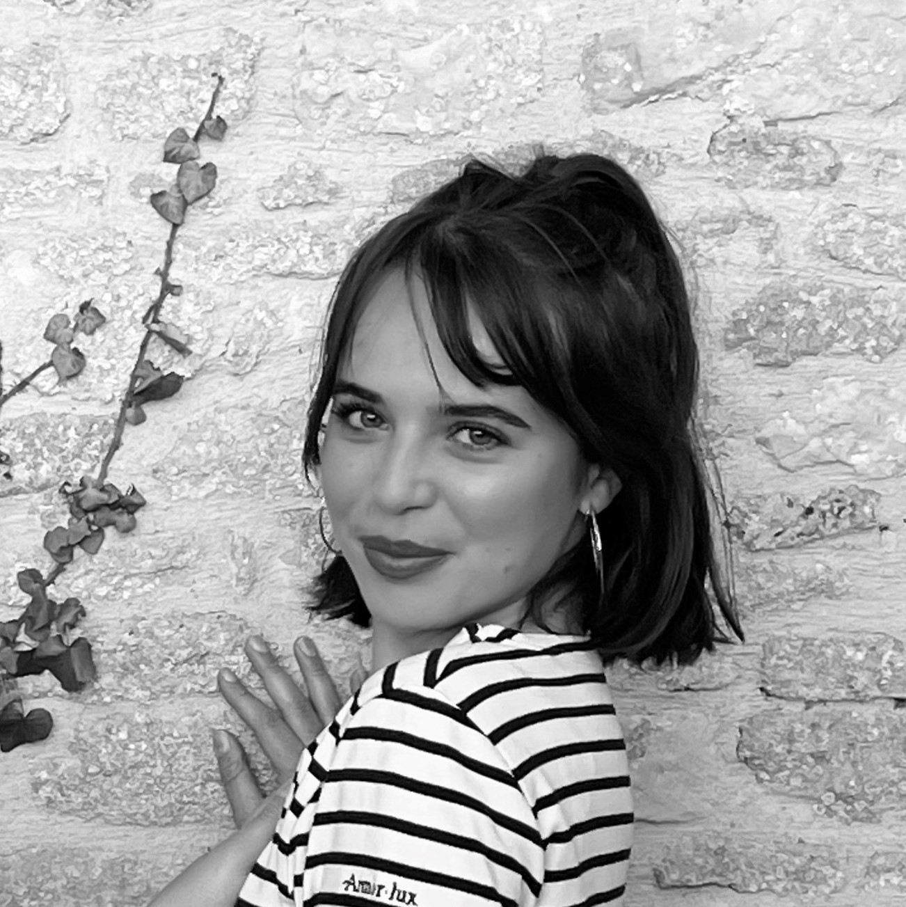
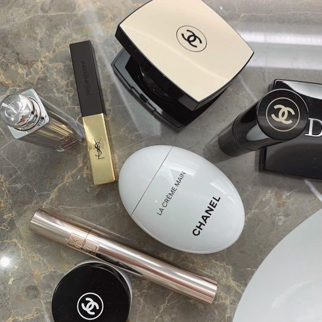
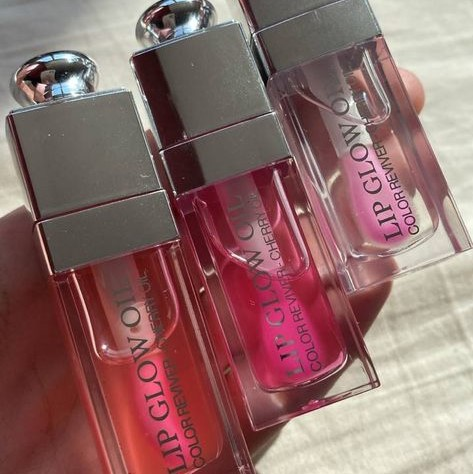
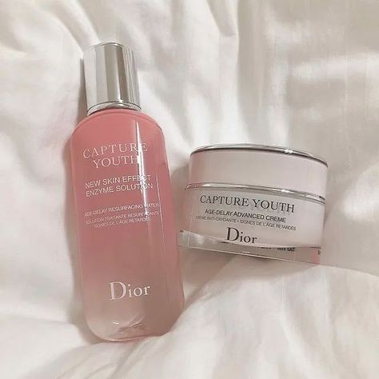
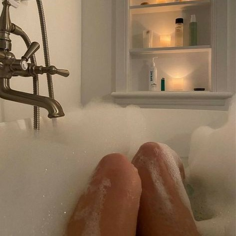
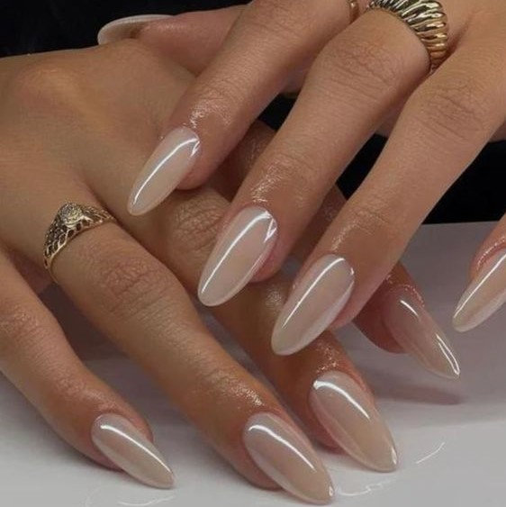

Bienvenue ! Je m'appelle Clara et voici mon profil ✨

Passionnée par les cosmétiques, je suis apprentie Cheffe de Projets Marketing Digital & Social Media chez Clarins.
En parallèle, je suis étudiante en Master Spécialisé Marketing Digital & Data au sein
de l'école de commerce KEDGE Business School, à Paris.
J'ai pour ambition de développer des expériences digitales disruptives et immersives
pour des marques créatives, qui prônent le pouvoir illimité de la beauté à travers
la liberté et la confiance en soi.
Beauté & Selflove 💄
C'est tellement puissant de se sentir beau/belle.
Ma vision : je pense que les produits cosmétiques matérialisent la confiance en soi et
c'est en travaillant sur son estime de soi que l'on accomplit de grandes choses. C'est la clé du succès
et du bonheur.
Mes missions chez Clarins 💻
Clarins est une entreprise française de cosmétiques, proposant des produits de soin et de maquillage.
Je fais partie de l'équipe Digitale Internationale dans laquelle je travaille autant sur
l'animation du site internet que sur l'animation des réseaux sociaux,
en particulier Instagram & Tiktok, le tout en étant garante du bon déploiement du plan d'animation 360.
Je gère donc plusieurs projets à la fois
et plus particulièrement les projets de lancements produits.
Beauty Moodboard ☁️
- 

- 
- 
- 
- 